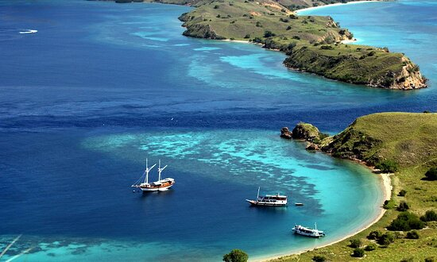
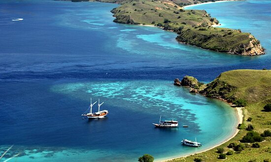
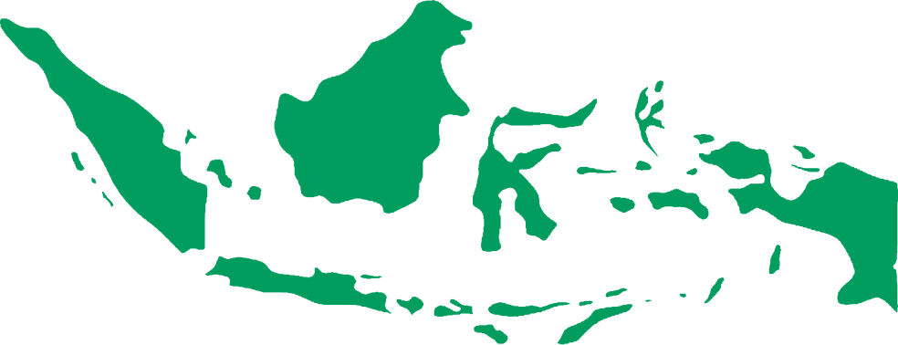

Gak cuman itu... Indonesia itu negara kepulauan yang gokil banget, guys! Dari Sabang sampai Merauke, ada ribuan pulau dengan beragam suku, budaya, dan bahasa yang bikin kita bangga. Plus, tempat wisatanya super keren, mulai dari Bali, Raja Ampat, sampai Gunung Bromo—nggak heran kalau dunia ngelirik kita!
📍INDONESIA
Imagine, gugusan pulau hijau zamrud stretching di khatulistiwa, itu Indonesia! Negara kepulauan terbesar di dunia, 17 ribu+ pulau, tiap pulau punya vibe sendiri. Dari gunung bersalju di Papua sampe pantai pasir putih Bali yang chill, landscape-nya mind-blowing, keanekaragaman hayatinya yang super rich.
